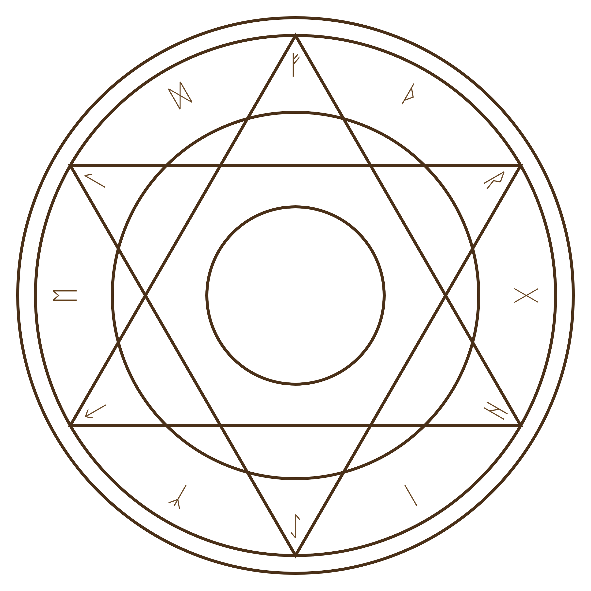
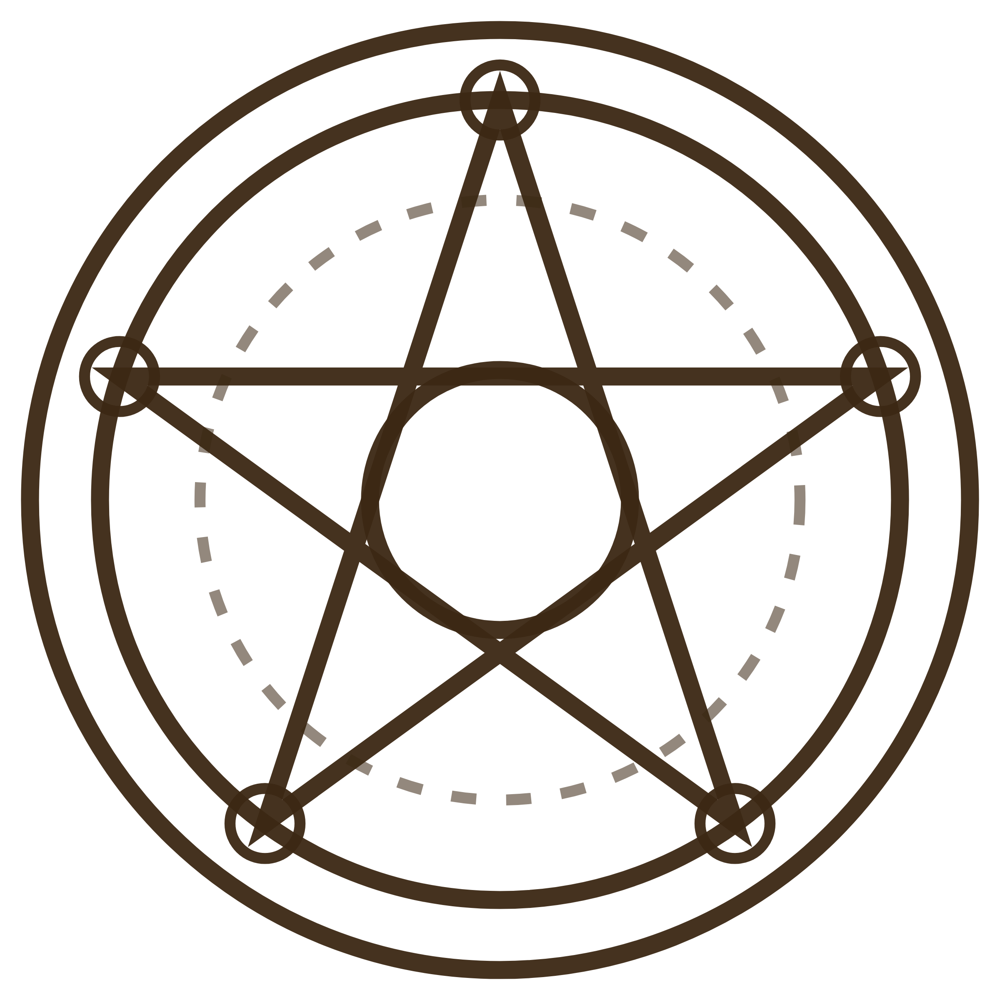
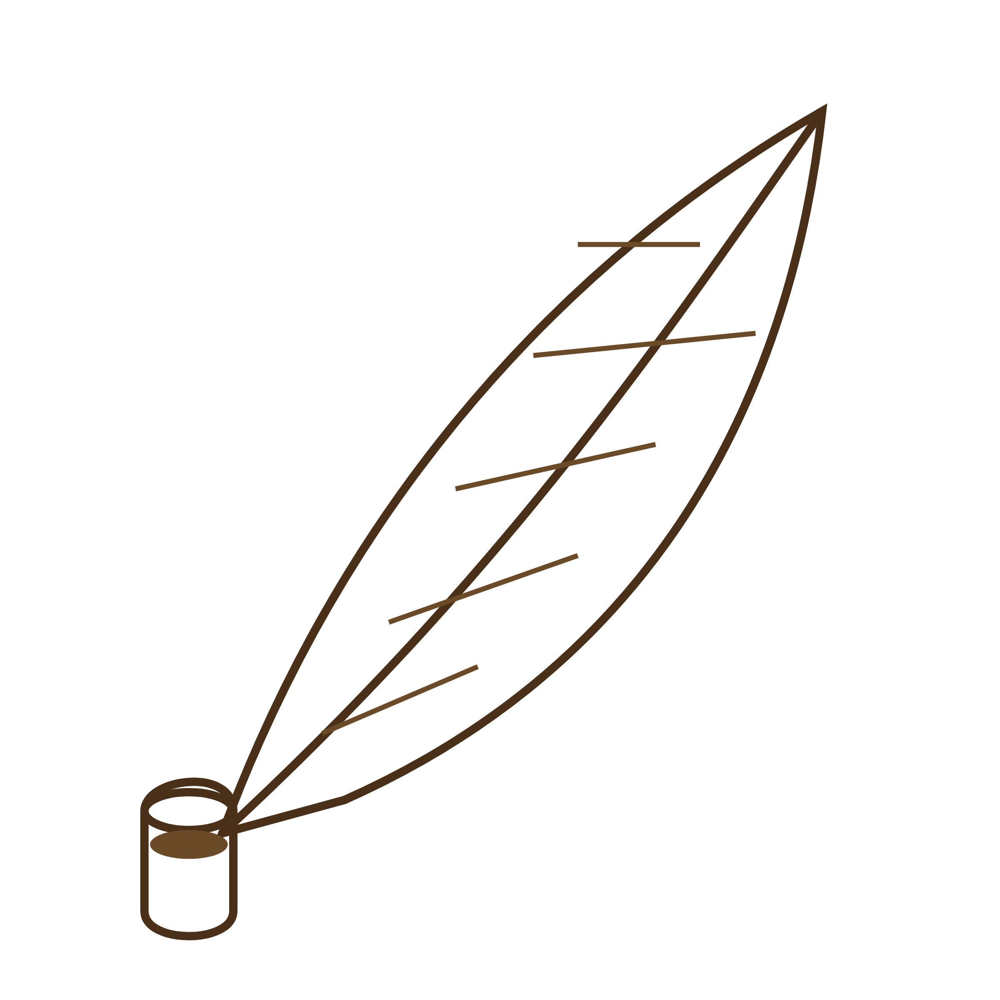
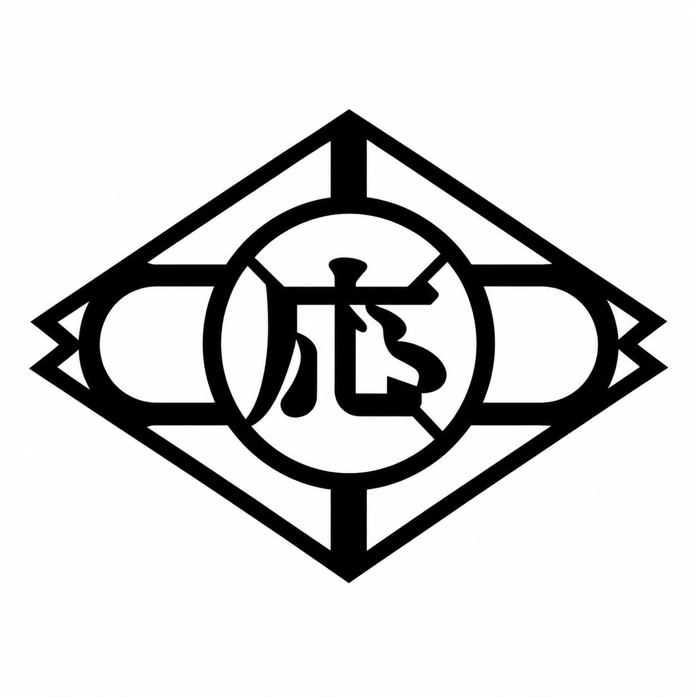
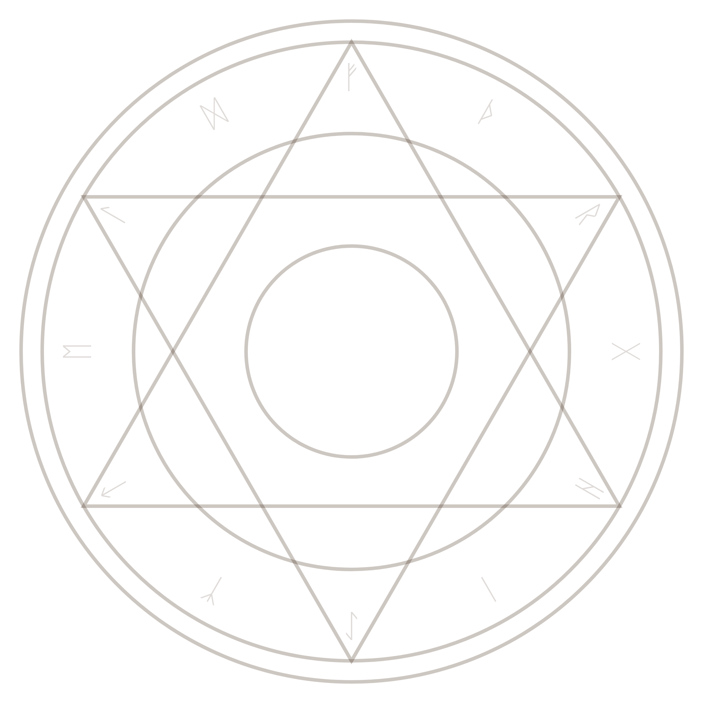
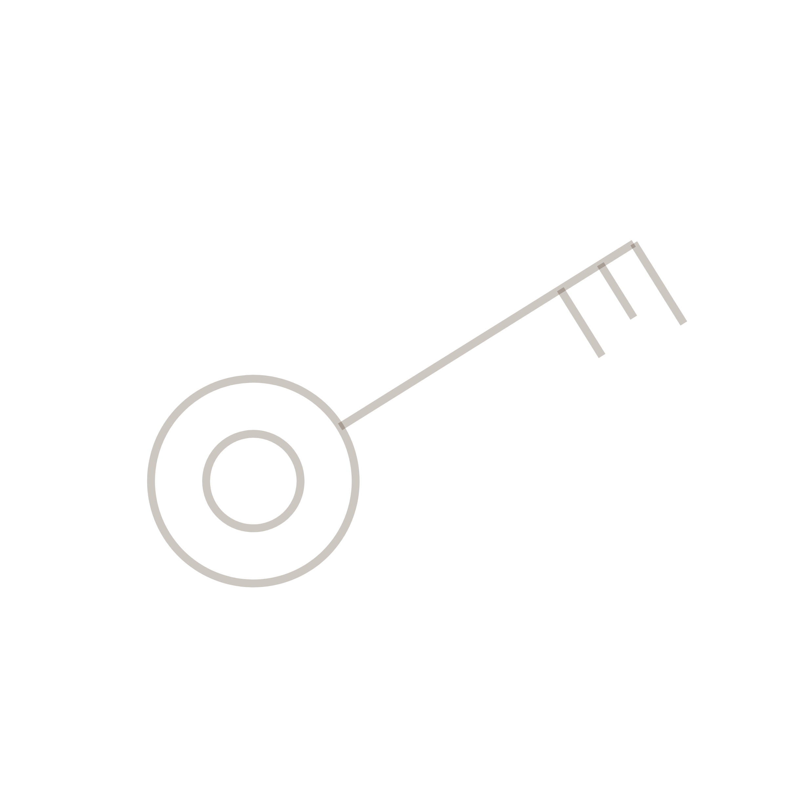

📐
🔬
🗝️


実行委員からのメッセージ
A
理科担当（おかだ とうま）
親子で、バスボムづくりをします。バスボム作りを通して、身近な現象を理科的な見方で理解できる楽しさを体験しましょう！
お家に帰ってからも話したくなる体験をお届けします！
B
数学担当（しばた としひこ）
親子で、数を数えるゲームをします。ゲームを通して、数学における「たいせつな考え方」にふれましょう。
親子と学校の距離がぐっと縮まる時間をお届けします。
C
脱出ゲーム担当（いがみ たける）
普段では学校でできないようなことをみんなでしちゃいましょう！

開催情報
日時
8月9日（土）
12:45〜16:30
会場
応時中学校
対象
応時中学校の親子

もちもの
📱 スマートフォン1台
✏️ 筆記用具
📕 数学の教科書
🥤 飲み物
👟 上ばき
※ スマホは謎解きでQRコードを読み取ります（チームで1台）
主催：応時中学校 親子学び祭 実行委員会
✦ Xからの挑戦 ✦
このパンフレットを
「実行委員からのメッセージ」の面だけ
が見えるように折り返せ。
その
折り目
にある2つの
魔法陣
を、スマホに映したXの手紙の同じ魔法陣に
ぴったり重ねよ
。
重なったとき、矢印がさす文字を
下から順に
読め。


？
？
？
🔑
🔍
★
★
✦
授業体験 ＋ 謎解き脱出ゲーム
親子
学び祭
「応中の封印を解け！」
─ 転校生Xからの挑戦状 ─
理科と数学の授業体験のあとは、
親子で挑む謎解き脱出ゲーム。
「学校って楽しい！」を見つけに来てね。
8/9
（土）
12:45 start
応時中学校
★
✦
⏰
✦
タイムスケジュール
12:15
受付
12:45
🎤 オープニング
13:00
🔬 授業① 理科
親子でバスボムをつくろう！
13:50
休憩
14:00
📐 授業② 数学
親子で数学ゲームを楽しみましょう
14:50
休憩
15:00
🔒 謎解き脱出ゲーム
「応中の封印を解け！」
内容はヒミツ…当日のおたのしみ！
16:30
🎉 終了
おつかれさまでした！
※ 時間は進行により前後する場合があります
？
？
★
✦
🗣 早口言葉でウォーミングアップ
授業がはじまる前に、親子で口を動かしておこう。
3回続けて言えたらクリア！かんだ人は……もう1回！
その1
となりの客は
よく柿食う客だ
その2
赤巻紙 青巻紙
黄巻紙
その3
東京特許
許可局
その4
生麦 生米
生卵
その5
この寿司は
すこし酢がききすぎだ
おまけ（むずかしい）
親子で学ぶ
応時中学校 親子学び祭
🗣 声に出すと、あたまも口もほぐれます。授業や謎解きの前にどうぞ！